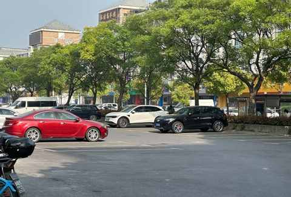
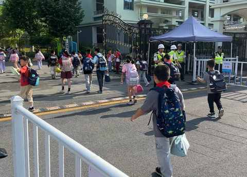

一位普通家长的二年级学期小结
1️⃣ 小测试的时间调整：
比最初通知的提前了一点点
今天下午已经全部考完，下周再上几天课就正式放暑假，而本周末是没有布置作业的，可谓是一个完全没有作业的周末。
2️⃣ 调整接送的方式的收获：
对学校的附近多了一些观察
① 距离地铁站1km，步行 15 分钟左右

② 旁边两条马路有 4 个公交站台
③ 在 200m 不到位置就有卖菜多个小店但卖早点的就一家
④ 周围有 3 个幼儿园和一个小学
⑤ 附近有多个社会停车场能临停

⑥ 有一家咖啡馆变成了馄炖店
⑦ 有一家面馆在转让
⑧ 隔一条马路的文具店是一些小朋友放学必逛的地方，周五人最多
⑨ 巴比馒头的包子真心不便宜，5 块 5 的牛肉大包千万别买
⑩ 如果步行回家，是 4.5 公里，大约 耗时 90 分钟
⑪ 始终不变的是上学下学拥堵的马路
3️⃣ 早餐尽量不重复
在车上边听喜马拉雅边吃早饭
吃完后也就抵达学校边上的停车场
①蒸饺、包子、手抓饼、三明治、粽子
+牛奶
②好在即使刚睡醒就换衣服出发也不影响食欲，不会特别早把他喊醒
③在出发时间稳定的情况下，便很少迟到
基本是 7:40-50 分到校

4️⃣ 就保护视力和控制体重而言：
充足的户外活动时间尤为重要
① 但现在的小朋友太宅太宅，毕竟好玩的东西太多太多了
② 那么被动的户外活动就尤为重要：步行、坐自行车后座感受 360 无死角的视角和耳边的风
③ 补给必不可少，放学接到之后第一时间给到食物，除了牛奶之外其他的零食会比较随机：水果、面包、饼干、干脆面、包子……
④ 即便时间已经足够，强度可能不足，体重增长会反应在面部和腹部
⑤ 在食物充足的当下，即便是有点挑食的小朋友也能在学校体检的时候喜提超重的提醒
5️⃣ 家长必须要学会处理的关系：
学生与作业的关系
①作业就在那里，不多不少
②每天都要到某个时间才能被学生完成
③作业不提也罢，说多了就没啥好词了
6️⃣ 一个不易被察觉的事实：
小朋友对家长的耐心远大于家长对小朋友的
① 我总会默认很多事情小朋友已经习得，当出现违背预期的事情出现之后，很快会变得严厉乃至情绪上头
② 而小朋友是断然不会如此的对待父母
③ 虽然会时不时反省和懊恼自己的行为，但仍需努力落实到行动中去
7️⃣ 红领巾的发放
比预计的晚一点
① 自发放之日起，后面每天上学都要系上红领巾，因为已经是光荣的少先队员
② 丢红领巾的速度比预计的快多了，好在家里用其他小朋友落下的 红领巾
8️⃣ 未知的事：
这学期有哪些事情会进入小朋友的童年记忆
① 可能是出去玩
② 可能是某次被批评
③ 可能是同学间的趣事
④ 可能是看的书听的故事
⑤ 可能并没有二年级下学期的故事
……